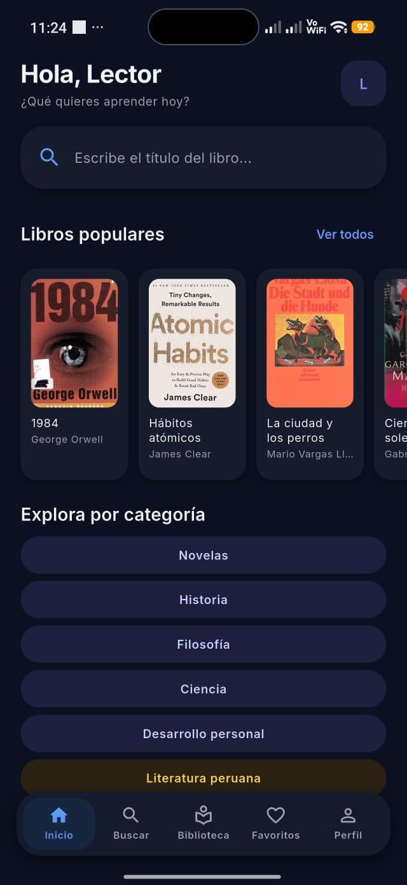

Tu compañero de lectura, ahora en Android
Hay un mundo
en cada libro.
Descúbrelo a
tu manera.
Lee, escucha y explora nuevas ideas. Con LibroIA, la inteligencia artificial te acompaña a descubrir todo lo que un libro tiene para ti.

Así se ve LibroIA en tu teléfono
Más formas de acercarte a un libro
Tu curiosidad elige.
LibroIA te acompaña.
A veces quieres una idea general. Otras, detenerte en cada detalle. Encuentra una forma de lectura para cada momento.
Empieza por lo esencial.
Explora un resumen breve o completo y encuentra las ideas principales de un libro. Tú eliges la extensión y el nivel de lenguaje.
Descubrir LibroIAEl contenido generado con IA puede contener imprecisiones. Contrástalo con la obra original.
Las cosas importantes
no siempre se ven.
Un pequeño viajero recorre distintos planetas y conoce formas muy diferentes de entender la vida. Sus encuentros invitan a pensar en la amistad, el cuidado y aquello a lo que damos valor.
Esos libros que
quieres tener cerca.
Busca por título o autor, guarda el contenido en tu biblioteca y marca tus favoritos. Retoma tus descubrimientos cuando quieras.
- Búsqueda por título y autor
- Biblioteca y favoritos en un solo lugar
- Historial para volver a tus búsquedas
Tu siguiente lectura
empieza en tres pasos.
Descarga LibroIA directamente e instálala en tu teléfono Android.
- 1
Descarga el APK
Pulsa “Descargar para Android” y espera a que termine la descarga del archivo.
- 2
Abre el archivo
Busca el APK en Descargas. Si Android lo solicita, permite la instalación desde el navegador o gestor de archivos que estés usando.
- 3
Empieza a explorar
Abre LibroIA, busca un libro y elige cómo quieres acercarte a su historia.
Tras instalarla, puedes volver a desactivar el permiso de instalación desde esa fuente.
Dale espacio
a tu próxima idea.
LibroIA ya está lista para acompañarte.
Antes de tu primera lectura
¿Alguna duda?
¿Cómo se instala LibroIA?+
Descarga el archivo APK desde esta página y ábrelo en tu dispositivo Android. Si aparece una solicitud de permiso para instalar desde esa fuente, revisa el aviso y sigue las indicaciones del teléfono. Puedes consultar los tres pasos de instalación arriba.
¿Está disponible para iPhone?+
La descarga disponible en esta página es un APK para Android. Este archivo no se puede instalar en un iPhone o un iPad.
¿Necesito conexión a internet?+
Sí, para generar nuevos resúmenes y otros contenidos con inteligencia artificial necesitas conexión a internet.
¿Qué puedo hacer con LibroIA?+
Puedes buscar libros por título o autor, generar resúmenes y análisis con IA, ajustar el lenguaje y la extensión, escuchar el texto y organizar tu biblioteca y favoritos.
¿Los resúmenes son el texto original del libro?+
No. Los resúmenes y análisis son contenido generado con inteligencia artificial. Pueden contener errores y sirven como apoyo para explorar una obra; no sustituyen su lectura ni una fuente verificada.